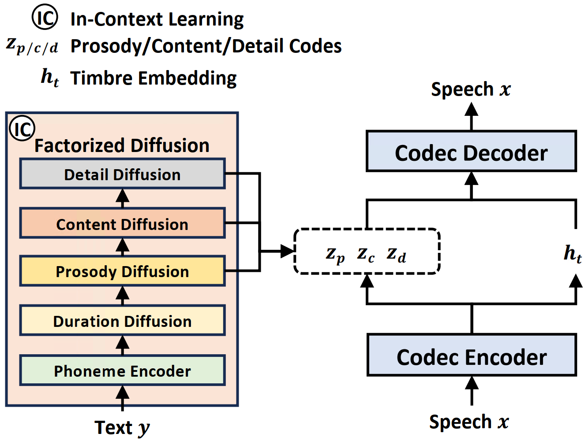

Factorized Diffusion Models are Natural and Zero-shot Speech Synthesizers
Anonymous Authors
Abstract.
While recent large-scale text-to-speech (TTS) models have achieved significant progress, they still fall shorts in speech quality, similarity, and prosody. Considering speech intricately encompasses various attributes (e.g., content, prosody, timbre, and acoustic details) that pose significant challenges for generation, a natural idea is to factorize speech into individual subspaces representing different attributes and generate them individually. Motivated by it, we propose a TTS system with novel factorized diffusion models to generate natural speech in a zero-shot way. Specifically, 1) we design a neural codec with factorized vector quantization (FVQ) to disentangle speech waveform into subspaces of content, prosody, timbre, and acoustic details; 2) we propose a factorized diffusion model, which generates attributes in each subspace following its corresponding prompt. With this factorization design, our method can effectively and efficiently model the intricate speech with disentangled subspaces in a divide-and-conquer way. Experimental results show that our method outperforms the state-of-the-art TTS systems on quality, similarity, prosody, and intelligibility.
This page is for research demonstration purposes only.
Overview

The overview of our method, with a neural speech codec for attribute factorization and a factorized diffusion model.
LibriSpeech Samples
Evaluation results on Librispeech test-clean. (P) denotes results from paper. (R) denotes reproduce.
-
Sim-O↑
Sim-R↑
WER↓
CMOS↑
SMOS↑
Ground Truth
0.68
-
1.94
+0.08
3.85
NaturalSpeech 2
0.55
0.62
1.94
-0.18
3.65
Voicebox
0.64
0.67
2.03
-0.23
3.69
Voicebox (R)
0.48
0.50
2.14
-0.32
3.52
VALL-E (P)
-
0.58
5.90
-
-
VALL-E (R)
0.47
0.51
6.11
-0.60
3.46
Mega-TTS 2
0.53
-
2.32
-0.20
3.63
UniAudio
0.57
0.68
2.49
-0.25
3.71
StyleTTS 2
0.38
-
2.49
-0.21
3.07
HierSpeech++
0.51
-
6.33
-0.41
3.50
Our method
0.67
0.76
1.81
0.00
4.01
(R) denotes reproduce.
Text
Prompt
Ground Truth
Our Method
NaturalSpeech 2
Voicebox
Voicebox (R)
VALL-E (R)
Mega-TTS 2
UniAudio
StyleTTS 2
HierSpeech++
It is this that is of interest to theory of knowledge.
Sim-O: 0.73
Sim-O: 0.65
Sim-O: 0.71
Sim-O: 0.49
Sim-O: 0.55
Sim-O: 0.55
Sim-O: 0.62
Sim-O: 0.39
Sim-O: 0.59
For, like as not, they must have thought him a prince when they saw his fine cap.
Sim-O: 0.73
Sim-O: 0.43
Sim-O: 0.62
Sim-O: 0.54
Sim-O: 0.45
Sim-O: 0.42
Sim-O: 0.47
Sim-O: 0.40
Sim-O: 46
What you had best do, my child, is to keep it and pray to it that since it was a witness to your undoing, it will deign to vindicate your cause by its righteous judgment.
Sim-O: 0.69
Sim-O: 0.66
Sim-O: 0.59
Sim-O: 0.59
Sim-O: 0.61
Sim-O: 0.46
Sim-O: 0.53
Sim-O: 0.52
Sim-O: 0.49
The strong position held by the Edison system under the strenuous competition that was already springing up was enormously improved by the introduction of the three wire system and it gave an immediate impetus to incandescent lighting.
Sim-O: 0.81
Sim-O: 0.64
Sim-O: 0.67
Sim-O: 0.65
Sim-O: 0.65
Sim-O: 0.60
Sim-O: 0.45
Sim-O: 0.44
Sim-O: 0.55
Emotional Samples
Evaluation results on Emotional speech dataset Ravdess. (R) denotes reproduce.
-
average MCD↓
MCD-Acc↑
CMOS↑
SMOS↑
Ground Truth
0.00
1.00
+0.17
4.42
NaturalSpeech 2
4.56
0.25
-0.22
4.04
Voicebox (R)
4.88
0.34
-0.34
3.92
VALL-E (R)
5.03
0.34
-0.55
3.80
Mega-TTS 2
4.44
0.39
-0.20
4.51
StyleTTS 2
4.50
0.40
-0.25
3.98
HierSpeech++
6.08
0.30
-0.37
3.87
Our method
4.28
0.52
0.00
4.72
Emotional samples of our method, using the text from Librispeech "Why fades the lotus of the water".
Prompt Emotion
Prompt
Our Method
neutral
happy
calm
sad
angry
fearful
disgust
surprised
Emotional samples on Ravdess. Ravdess has only two texts: "Dogs are sitting by the door." for prompt text, and "Kids are talking by the door." for synthesis text. (R) denotes reproduce.
Prompt Emotion
Prompt
Ground Truth
Our Method
NaturalSpeech 2
Voicebox (R)
VALL-E (R)
Mega-TTS 2
StyleTTS 2
HierSpeech++
neutral
happy
calm
sad
angry
fearful
disgust
surprised
Attribute Manipulation
Row 1: Original prompt. Row 2: Slowed version. Row 3: Sped-up version. Row 4: New prompt with a fast speech rate.
Manipulation Type
Duration Prompt
Other Prompts
Our Method
-
duration
duration
duration
Row 1: Original prompt. Row 2: Slowed version with a smoother pitch contour. Row 3: New prompt with a sharp pitch contour. Note: the speech rate of the prosody prompt does not affect the speech rate of the generated audio in Row 2.
Manipulation Type
Prosody Prompt
Other Prompts
Our Method
-
prosody
prosody
Row 1: Original prompt. Row 2: New prompt from a different speaker.
Manipulation Type
Timbre Prompt
Other Prompts
Our Method
-
timbre
Row 1: Original prompt. Row 2: New durarion prompt, with a slow speech rate & New prosody prompt, with a smooth pitch contour.
Manipulation Type
Duration Prompt
Prosody Prompt
Other Prompts
Our Method
-
Mix (duration & prosody)
Reconstruction Samples
(R) denotes reproduce.
Ground Truth
Our Codec 4.8 kbps
SoundStream (R) 4.8 kbps
SoundStream (R) 9.6 kbps
Encodec 6.0 kbps
Encodec (R) 5.0 kbps
HiFi-Codec 2.0 kbps
DAC 4.5 kbps
Voice Conversion Samples
Prompt
Source
Our Codec
Ethics Statement
Since our model could synthesize speech with great speaker similarity, it may carry potential risks in misuse of the model, such as spoofing voice identification or impersonating a specific speaker. We conducted the experiments under the assumption that the user agree to be the target speaker in speech synthesis. To prevent misuse, it is crucial to develop a robust synthesized speech detection model and establish a system for individuals to report any suspected misuse.